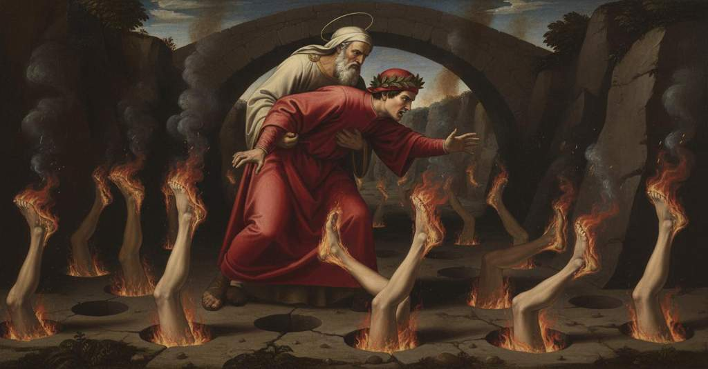

Inferno — Canto 19

1
O Simon mago, o miseri seguaci
O Simon Magus, o wretched followers
おお、シモン・マグスよ、おお、惨めな信奉者たちよ、
2
che le cose di Dio, che di bontate
who the things of God, which of goodness
神のもの、善の花嫁たるべきものを、
3
deon essere spose, e voi rapaci
ought to be spouses, and you rapacious ones
おまえたち強欲な者たちは金と銀のために
4
per oro e per argento avolterate,
for gold and for silver adulterate,
汚し、姦淫する。
5
or convien che per voi suoni la tromba,
now it is fitting that for you the trumpet sound,
今こそおまえたちのためにラッパが鳴り響くがよい、
6
però che ne la terza bolgia state.
because in the third ditch you are.
なぜならおまえたちは第三の濠にいるのだから。
7
Già eravamo, a la seguente tomba,
Already we were, at the following tomb,
我々はすでに、次の濠へと続く
8
montati de lo scoglio in quella parte
mounted on the rock-bridge in that part
岩橋の、まさしく濠の半ばの真上に
9
ch’a punto sovra mezzo ’l fosso piomba.
that right over the middle of the ditch hangs.
垂れ下がっている部分に登っていた。
10
O somma sapïenza, quanta è l’arte
O supreme wisdom, how great is the art
おお、至高の知恵よ、
11
che mostri in cielo, in terra e nel mal mondo,
that you show in heaven, on earth, and in the evil world,
天に、地に、そして悪しき世に汝が示す術はいかに偉大で、
12
e quanto giusto tua virtù comparte!
and how justly your power dispenses!
汝の力はいかに正しく分配することか！
13
Io vidi per le coste e per lo fondo
I saw along the sides and on the bottom
私は見た、側面と底の
14
piena la pietra livida di fóri,
the livid stone full of holes,
青黒い岩が穴で満ちているのを。
15
d’un largo tutti e ciascun era tondo.
all of one width and each one was round.
皆同じ広さで、それぞれが丸かった。
16
Non mi parean men ampi né maggiori
They did not seem to me less wide nor larger
私には、私の美しいサン・ジョヴァンニにある、
17
che que’ che son nel mio bel San Giovanni,
than those that are in my beautiful San Giovanni,
洗礼を授ける者の場所として作られたものより
18
fatti per loco d’i battezzatori;
made as a place for the baptizers;
小さくも大きくも見えなかった。
19
l’un de li quali, ancor non è molt’ anni,
one of which, not yet many years ago,
そのうちの一つを、まだいく年も経たぬ昔、
20
rupp’ io per un che dentro v’annegava:
I broke for one who was drowning inside it:
私はその中で溺れていた者を助けるために壊したのだ。
21
e questo sia suggel ch’ogn’ omo sganni.
and let this be a seal that undeceives every man.
そしてこれが、あらゆる人を欺きから解く印となれ。
22
Fuor de la bocca a ciascun soperchiava
Out of the mouth of each one protruded
それぞれの口からはみ出していたのは、
23
d’un peccator li piedi e de le gambe
a sinner’s feet and legs
一人の罪人の足と、太腿までの
24
infino al grosso, e l’altro dentro stava.
up to the calf, and the rest inside stayed.
両脚であり、残りの体は中にあった。
25
Le piante erano a tutti accese intrambe;
The soles were on all of them both on fire;
足の裏は皆両方とも燃えていた。
26
per che sì forte guizzavan le giunte,
because of which the joints twitched so strongly,
そのために関節が激しくひきつるので、
27
che spezzate averien ritorte e strambe.
that they would have snapped ropes and withes.
縄や細枝の枷など引きちぎるほどであった。
28
Qual suole il fiammeggiar de le cose unte
As the flaming of greasy things is wont
油を塗ったものが燃え上がるときに炎が
29
muoversi pur su per la strema buccia,
to move just over the outer surface,
ただその表面を走るように、
30
tal era lì dai calcagni a le punte.
such was it there from the heels to the toes.
そのように炎は踵から爪先まで走っていた。
31
«Chi è colui, maestro, che si cruccia
“Who is that one, master, who torments himself
「師よ、あれは誰ですか、
32
guizzando più che li altri suoi consorti»,
twitching more than his other companions,”
他の仲間たちよりも激しく身をよじり、苦しみもだえ、
33
diss’ io, «e cui più roggia fiamma succia?».
I said, “and whom a redder flame sucks?”
そしてより赤い炎に吸われているのは？」と私は言った。
34
Ed elli a me: «Se tu vuo’ ch’i’ ti porti
And he to me: “If you want me to carry you
すると彼は私に言った、「もしおまえが私に運んでほしいなら
35
là giù per quella ripa che più giace,
down there by that bank which lies lower,
あのより緩やかな土手の下へ、
36
da lui saprai di sé e de’ suoi torti».
from him you will learn of himself and of his wrongs.”
彼から、彼自身と彼の罪について知るがよい。」
37
E io: «Tanto m’è bel, quanto a te piace:
And I: “What pleases you is beautiful to me:
そして私は、「あなたが喜ばれることなら、私にとっても嬉しいことです。
38
tu se’ segnore, e sai ch’i’ non mi parto
you are lord, and know that I do not depart
あなたは主であり、私があなたの意志から
39
dal tuo volere, e sai quel che si tace».
from your will, and you know what is left unspoken.”
離れぬことをご存知です。そして、私が黙していることもお見通しです。」
40
Allor venimmo in su l’argine quarto;
Then we came onto the fourth embankment;
その時、我々は第四の土手の上にやって来た。
41
volgemmo e discendemmo a mano stanca
we turned and descended on the left hand
我々は向きを変え、左手へと下りていった、
42
là giù nel fondo foracchiato e arto.
down there into the narrow and pitted bottom.
下の、穴だらけで狭い底へと。
43
Lo buon maestro ancor de la sua anca
The good master not yet from his hip
善き師はまだその腰から
44
non mi dipuose, sì mi giunse al rotto
did set me down, till he brought me to the fissure
私を降ろさず、私をあの裂け目に運んだ、
45
di quel che si piangeva con la zanca.
of the one who was weeping with his shanks.
その者は脛で嘆き悲しんでいた。
46
«O qual che se’ che ’l di sù tien di sotto,
“O whoever you are who holds the upper part below,
「おお、何者か、上を下にして、
47
anima trista come pal commessa»,
sad soul stuck in like a stake,”
杭のように打ち込まれた悲しき魂よ」
48
comincia’ io a dir, «se puoi, fa motto».
I began to say, “if you can, speak a word.”
私は言い始めた、「もしできるなら、言葉を発せよ」。
49
Io stava come ’l frate che confessa
I stood like the friar who confesses
私は告解を聞く修道士のように立っていた、
50
lo perfido assessin, che, poi ch’è fitto,
the treacherous assassin, who, after he is fixed,
裏切りの暗殺者の。彼は、埋められると、
51
richiama lui per che la morte cessa.
calls him back so that death is delayed.
死を遅らせるためにその者を呼び戻す。
52
Ed el gridò: «Se’ tu già costì ritto,
And he cried out: “Are you already standing there,
すると彼は叫んだ、「お前はもうそこに来て立っているのか、
53
se’ tu già costì ritto, Bonifazio?
are you already standing there, Boniface?
お前はもうそこに来て立っているのか、ボニファティウスよ？
54
Di parecchi anni mi mentì lo scritto.
The writing has lied to me by several years.
書物は私に数年の嘘をついたのだ。
55
Se’ tu sì tosto di quell’ aver sazio
Are you so soon sated with that wealth
お前はもうあの財産に飽いたというのか、
56
per lo qual non temesti tòrre a ’nganno
for which you did not fear to take by deceit
そのために、お前は欺きをもって奪うことを恐れず
57
la bella donna, e poi di farne strazio?».
the beautiful lady, and then to ravage her?”
かの美しい貴婦人を、そして彼女をずたずたにすることを？」。
58
Tal mi fec’ io, quai son color che stanno,
I became like those who stand,
私は、こうなった、あの者たちのように、
59
per non intender ciò ch’è lor risposto,
from not understanding what is answered to them,
自分に返されたことを理解できず、
60
quasi scornati, e risponder non sanno.
as if mocked, and know not how to reply.
まるで馬鹿にされたように、返答もできずにいる者たちの。
61
Allor Virgilio disse: «Dilli tosto:
Then Virgil said: “Tell him quickly:
その時ウェルギリウスは言った、「すぐに彼に言え、
62
“Non son colui, non son colui che credi”»;
‘I am not he, I am not he whom you believe’”;
『私はその者ではない、お前が信じるその者ではない』と」。
63
e io rispuosi come a me fu imposto.
and I replied as was imposed on me.
そして私は命じられた通りに答えた。
64
Per che lo spirto tutti storse i piedi;
At which the spirit twisted his feet completely;
それゆえにその魂は両足を激しく捻り、
65
poi, sospirando e con voce di pianto,
then, sighing and with a tearful voice,
やがて、溜息をつき、泣き声で、
66
mi disse: «Dunque che a me richiedi?
said to me: “Then what do you ask of me?
私に言った、「では、私に何を求めるのか？
67
Se di saper ch’i’ sia ti cal cotanto,
If to know who I am concerns you so much
私が誰であるか知りたいとそれほどに願うなら、
68
che tu abbi però la ripa corsa,
that you have for it run down the bank,
そのためにこの岸を駆け下りてきたのなら、
69
sappi ch’i’ fui vestito del gran manto;
know that I was clothed in the great mantle;
知るがよい、私は大いなる外套をまとっていたと。
70
e veramente fui figliuol de l’orsa,
and truly I was a son of the she-bear,
そして実に私は雌熊の子であり、
71
cupido sì per avanzar li orsatti,
so greedy to advance the cubs,
子熊たちを富ませようとあまりに貪欲で、
72
che sù l’avere e qui me misi in borsa.
that up there I put wealth, and here myself, into the purse.
上では富を、ここでは我が身を袋に入れたのだ。
73
Di sotto al capo mio son li altri tratti
Below my head are the others dragged
私の頭の下には、他の者たちが引きずり込まれている、
74
che precedetter me simoneggiando,
who preceded me in simony,
私に先立って聖職売買を犯し、
75
per le fessure de la pietra piatti.
flattened within the fissures of the stone.
石の割れ目の中で平たくなっている者たちが。
76
Là giù cascherò io altresì quando
There below I too shall fall when
私もまた、そこへ落ちるだろう、その時が来れば、
77
verrà colui ch’i’ credea che tu fossi,
he will come whom I believed you to be,
私が、お前だと思っていた者がやって来る、
78
allor ch’i’ feci ’l sùbito dimando.
when I made the sudden question.
私が突然の問いを発した時に。
79
Ma più è ’l tempo già che i piè mi cossi
But the time is already longer that my feet have cooked
しかし、私がこの足を焼かれ、
80
e ch’i’ son stato così sottosopra,
and that I have been thus upside down,
このように逆さまになっていた時間は、
81
ch’el non starà piantato coi piè rossi:
than he will stay planted with his red feet:
彼が赤い足で突き立てられる時間よりも長いだろう。
82
ché dopo lui verrà di più laida opra,
for after him will come one of more ugly work,
なぜなら彼に続き、さらに醜悪な行いの者が来る、
83
di ver’ ponente, un pastor sanza legge,
from toward the west, a pastor without law,
西の方角から、無法の牧者が、
84
tal che convien che lui e me ricuopra.
such that it is fitting he cover both him and me.
彼と私を覆い隠すのにふさわしい者が。
85
Nuovo Iasón sarà, di cui si legge
A new Jason will he be, of whom one reads
新たなイアソンとなるだろう、その者のことは記されている
86
ne’ Maccabei; e come a quel fu molle
in Maccabees; and as to that one was pliant
『マカバイ記』に。そして彼に対してその王が
87
suo re, così fia lui chi Francia regge».
his king, so will be to him he who rules France.”
甘かったように、フランスを統べる者が彼にそうなるだろう」。
88
Io non so s’i’ mi fui qui troppo folle,
I do not know if I was here too bold,
私がここで大胆すぎたかどうかは分からないが、
89
ch’i’ pur rispuosi lui a questo metro:
that I replied to him in this strain:
私はただ彼にこのような調子で答えた。
90
«Deh, or mi dì: quanto tesoro volle
"Pray, now tell me: how much treasure did
「さあ、今こそ私に言え、どれほどの宝を
91
Nostro Segnore in prima da san Pietro
Our Lord want at first from Saint Peter
我らの主は、初めに聖ペテロに求められたのか、
92
ch’ei ponesse le chiavi in sua balìa?
before he put the keys into his keeping?
鍵をその手に委ねるにあたって。
93
Certo non chiese se non “Viemmi retro”.
Certainly he asked for nothing but 'Come behind me.'
確かに主は『我に従え』としかお求めにならなかった。
94
Né Pier né li altri tolsero a Matia
Nor did Peter nor the others take from Matthias
ペテロも他の者たちもマティアからは取らなかった、
95
oro od argento, quando fu sortito
gold or silver, when he was chosen by lot
金も銀も、彼がくじで選ばれた時に、
96
al loco che perdé l’anima ria.
for the place that the guilty soul had lost.
罪深き魂が失ったその地位へと。
97
Però ti sta, ché tu se’ ben punito;
Therefore stay put, for you are justly punished;
だからそこにいろ、お前は正しく罰せられているのだから。
98
e guarda ben la mal tolta moneta
and guard well the ill-gotten money
そしてよく守るがよい、不正に得たその金を、
99
ch’esser ti fece contra Carlo ardito.
that made you be so bold against Charles.
それがお前をシャルルに逆らって大胆にならせたのだ。
100
E se non fosse ch’ancor lo mi vieta
And if it were not that it is still forbidden me
そして、もし私を今なお禁じるものがなければ、
101
la reverenza de le somme chiavi
by the reverence for the supreme keys
至高の鍵への敬意が、
102
che tu tenesti ne la vita lieta,
that you held in the happy life,
お前が幸福な生で手にしていた、
103
io userei parole ancor più gravi;
I would use words even heavier;
私はさらに厳しい言葉を使ったであろう。
104
ché la vostra avarizia il mondo attrista,
for your avarice saddens the world,
なぜなら、お前たちの貪欲が世界を悲しませ、
105
calcando i buoni e sollevando i pravi.
trampling the good and lifting up the wicked.
善き人々を踏みつけ、悪しき者どもを引き上げているからだ。
106
Di voi pastor s’accorse il Vangelista,
Of you shepherds the Evangelist was aware,
お前たちのような牧者のことを福音書記者は気づいていた、
107
quando colei che siede sopra l’acque
when she who sits upon the waters
水の上に座る女が、
108
puttaneggiar coi regi a lui fu vista;
was seen by him to fornicate with the kings;
王たちと淫行するのを彼が見た時に。
109
quella che con le sette teste nacque,
she who was born with the seven heads,
あの女は七つの頭をもって生まれ、
110
e da le diece corna ebbe argomento,
and from the ten horns had her argument,
十の角からその権威を得ていた、
111
fin che virtute al suo marito piacque.
as long as virtue was pleasing to her husband.
夫に徳が喜ばれている間は。
112
Fatto v’avete dio d’oro e d’argento;
You have made a god for yourselves of gold and silver;
お前たちは金と銀で神を造り上げた。
113
e che altro è da voi a l’idolatre,
and what difference is there between you and the idolater,
そしてお前たちと偶像崇拝者との違いは何か、
114
se non ch’elli uno, e voi ne orate cento?
except that he prays to one, and you to a hundred?
彼が一つの神を、お前たちが百もの神を拝むこと以外に。
115
Ahi, Costantin, di quanto mal fu matre,
Ah, Constantine, of how much evil was the mother,
ああ、コンスタンティヌスよ、どれほどの悪の母となったことか、
116
non la tua conversion, ma quella dote
not your conversion, but that dowry
お前の改宗ではなく、その寄進こそが、
117
che da te prese il primo ricco patre!».
that the first rich father took from you!"
お前から最初の富める教父が受け取った！」。
118
E mentr’ io li cantava cotai note,
And while I was singing such notes to him,
そして私が彼にそのような調べを歌っている間、
119
o ira o coscïenza che ’l mordesse,
whether it was wrath or conscience that bit him,
怒りか良心が彼を苛んだのか、
120
forte spingava con ambo le piote.
he was kicking hard with both his feet.
彼は両足で激しく蹴っていた。
121
I’ credo ben ch’al mio duca piacesse,
I do believe that it pleased my guide,
私は確かに信じる、我が導き手に喜ばれたと。
122
con sì contenta labbia sempre attese
with so content a lip he listened all the while
あれほど満足げな表情で彼は常に耳を傾けていたのだから、
123
lo suon de le parole vere espresse.
to the sound of the true words expressed.
語られた真実の言葉の響きに。
124
Però con ambo le braccia mi prese;
Therefore with both his arms he took me;
それゆえ彼は両腕で私を抱きかかえ、
125
e poi che tutto su mi s’ebbe al petto,
and when he had me fully on his breast,
そして私をすっかり胸に抱き寄せると、
126
rimontò per la via onde discese.
he climbed back up by the way he had come down.
降りてきた道を再び登って行った。
127
Né si stancò d’avermi a sé distretto,
Nor did he tire of having me held close to him,
彼は私を胸にきつく抱くことに疲れもせず、
128
sì men portò sovra ’l colmo de l’arco
so he carried me up to the summit of the arch
私をアーチ橋の頂上まで運んでくれた、
129
che dal quarto al quinto argine è tragetto.
that is the passage from the fourth to the fifth bank.
それは第四の土手から第五の土手への架け橋である。
130
Quivi soavemente spuose il carco,
There gently he set down the burden,
そこで彼は優しくその荷を下ろした、
131
soave per lo scoglio sconcio ed erto
gentle on the rough and steep rock
荒々しく険しい岩の上で優しく、それは
132
che sarebbe a le capre duro varco.
that for goats would be a hard passage.
山羊にとっても困難な道であろう。
133
Indi un altro vallon mi fu scoperto.
Then another valley was discovered to me.
そこから、もう一つの谷間が私に現れた。